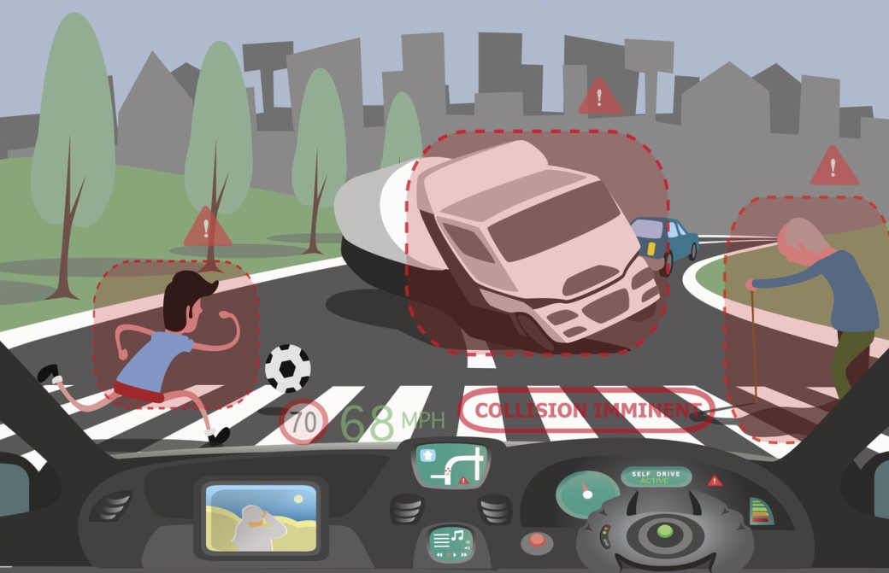

Les voitures autonomes sont en développement depuis plusieurs années maintenant, leurs constructeurs nous annoncent un avenir où le nombre d’accidents sera grandement réduit, mais peut-on réellement laisser le contrôle total à ces voitures autonomes ? Nous tenterons de vous exposer à travers un développement argumenté quelles sont les limites techniques auxquelles les voitures autonomes seront confrontées puis nous en verrons l’aspect éthique.
L’avantage principal lorsque l’on parle des voitures autonomes est probablement la sécurité qu’elles apportent. En effet on estime le nombre d’accidents causés par un facteur humain à 93% d’après l’article «3 conseils pour comprendre le véhicule autonome» de Yann Arnaud issu de l’Essentiel, même s’il est évident que tous ne pourront pas être évités, on peut tout de même en imaginer une réduction considérable, notamment grâce à la précision des capteurs capables de détecter la signalisation ainsi que les différentes voitures présentes et d’anticiper leurs déplacements permettant ainsi d’éviter les obstacles tout en respectant la réglementation locale.
Néanmoins, en mars 2018, une voiture autonome Uber a percuté un piéton, ce qui remet en question la fiabilité de cette technologie. En effet, lors de multiples simulations informatiques, l’intelligence artificielle chargée de prendre le contrôle du véhicule s’en sortait très bien pour effectuer des manoeuvres sur des circuits prédéfinis et sans difficulté, avec des usagers de la route parfaitement placés, des positions millimétrées, or dans la vie réelle, on se rend bien compte que ce type de scénario n’existe pas. De plus, une enseignante de l’université Berkeley située en Californie, Avideh Zakhor rapporte que 15% des situations ne peuvent pas être correctement comprises par le logiciel embarqué. Les conditions météorologiques posent aussi un gros problème, on sait que par temps de pluie ou quand il neige, les capteurs ont du mal à repérer les marquages au sol et les obstacles, ce qui augmente considérablement le risque d’accident.
Si la technologie est toujours perfectible, l’éthique reste un sujet omniprésent dans chaque décision que la voiture devra prendre, ainsi Jean-François BONNEFON et son équipe du M.I.T. ont lancé en 2016 un site internet nommé Moral Machine destiné à recueillir les réponses des visiteurs à des dilemmes moraux auxquels l’intelligence artificielle aura affaire. Parmi lesquelles figurent notamment la décision en fonction de l’âge, de la situation sociale, de l’aspect physique, du fait que ce soit un animal ou un humain. Par exemple, la majorité des interrogés préfèrent globalement sauver les jeunes plutôt que les aînés. Pour déterminer la situation sociale d’une personne, il faudrait recourir à la reconnaissance faciale et ainsi au répertoriage des profils de chaque individu dans des bases de données, pouvant occasionner des fuites et ainsi causer des problèmes de vie privée.
Une autre question se pose, qui serait responsable d’un accident provoqué par une voiture autonome ? L’Homme placé côté conducteur de la voiture est-il simple passager ou responsable des déplacements de la voiture, de ses défaillances ainsi que des choix faits par l’intelligence artificielle ? D’après la loi Pacte, le conducteur sera toujours responsable des accidents provoqués, mais cela signifie donc qu’en laissant le contrôle aux voitures autonomes, nous prenons le risque d’être responsable d’un accident que nous n’avons pas causé.
En conclusion , la voiture autonome représente une avancée en matière de sécurité et possède des avantages certains, mais pour le moment, on ne peut pas lui laisser le contrôle total car la technologie dont elle dispose n’est pas fiable dans 100% des cas. De plus, laisser un tel pouvoir de vie ou de mort à une machine dénuée d’émotions et imprégnée de choix moraux dépendants d’autant de facteurs serait problématique. Toutefois, d’ici quelques années, après un travail collaboratif des experts scientifiques et de l’éthique, nous pourrions envisager l’apparition de voitures complètement autonomes…